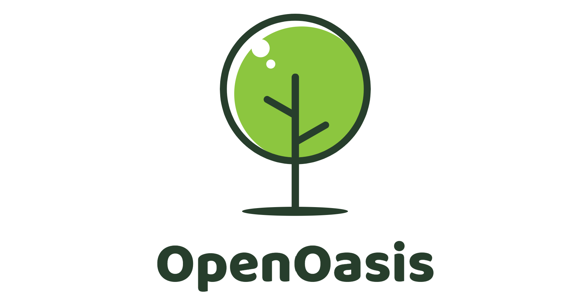

什么是绿洲？¶
OpenOasis，绿洲，作为一个真实世界物理模型的数值模拟项目，希望能帮助提高对于理论概念、
数值方法和现实数据的理解；同时，提供一个标准化的平台来尝试新想法和新方案。
绿洲 项目基于 OpenMI v2.0 接口规范，实现一套通用的数值模型开发以及集成框架，
不局限于特定领域。就当前来说，项目主要应用于区域内流体流动、热量流动等过程。除此之外，
我们也积极探索深度学习和强化学习等新思路在快速预报、智能决策等方面的应用。
绿洲 项目采用 C++17 开发数值算法模型内核，同时采用 Python 3.x 开发智能引擎包和数据工具，
积极尝试蓬勃发展的人工智能技术。